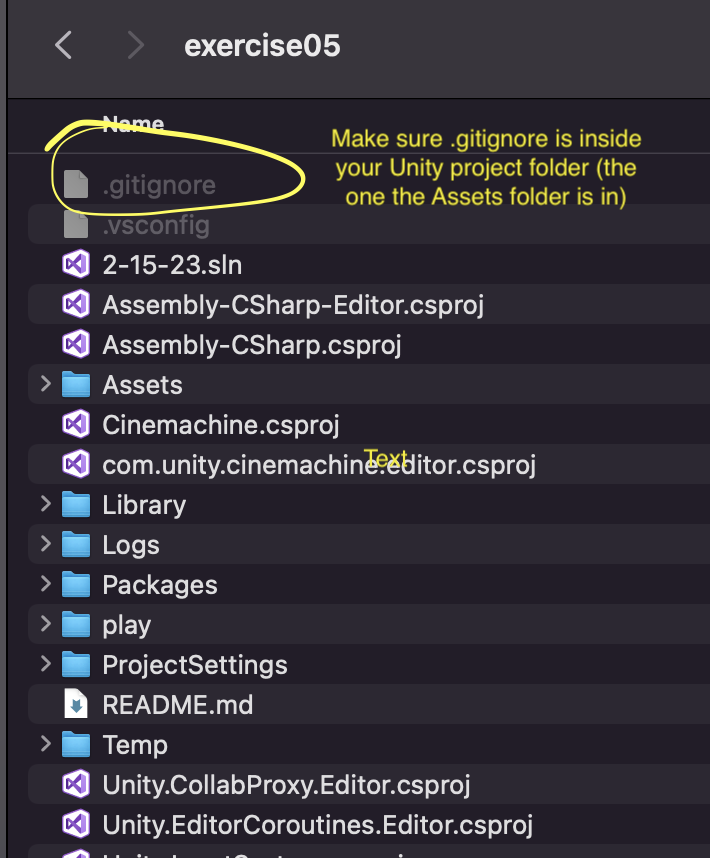

Open Github desktop and log in (you may need to go to Preferences->Accounts)
Add a repository for the exercise
Name as is specified in the assignment (remember, everything is case sensitive)
Make sure the repository is marked as "public"
Select "Unity" for Git Ignore
For Local Path put it wherever you like to keep your class files on your computer
Check "Initialize this repository with a README"
Click "Create Repository"
Commit your changes to the repository "locally" by typing a brief summary of what you did in the Summary field (e.g. "Created the repository for game615") and click "Commit to master" (this should be on the bottom left of the window).
On the top/middle region of the screen, click "Publish repository"
Setting up your repository for submitting work
Go to your web browser, log into Github.com, and find the repository you just created and posted (click the repositories tab).
Click the "Settings" tab (located in the top middle of the window). Then, click the "Pages" button on the left middle of that window. In that window, under the label that says "Branch" there will be a dropdown that reads "None". Select "main" and click the save button.
NOTE: If you get something that says "Upgrade or make this repository public to enable Pages", this means that you did not uncheck the box that read "keep it private" when you published your repository. To fix this, you will need to click the "General button" (on the left side of the screen), then scroll down to the bottom of the page where it says "Danger Zone" and click the "Change visibility" button. Follow the steps to make your repository "public", and then try this step again.
Modifying your .gitignore file
The gitignore file allows you to specify files that you do not want git to track (and submit to github). Unity creates tons of files that you don't need to save (and actually cannot put on github because they are too big). The following instructions make it so we don't upload unnecessary files to github, and thus won't use up all the space we are given for free.
To get your .gitignore file, you can either have GitHub Desktop generate it for you when you create your respository (be sure to select "Unity" from the dropdown menu), or you can create a plain text file, name it ".gitignore" and copy all the text from this into your file.
Place the gitignore file inside of the Unity project you created. In other words, you want the .gitignore file to be in the same folder as the "Assets" folder (not inside the assets folder though). See the image below.
On your computer, open up the .gitignore file in a plain text editor
NOTE: The gitignore file is "hidden" which means that your operating system won't show it. Google how to make hidden files visible on your machine permanently, and you will be able to see it in the folder.
Delete the lines that say the following:
[Bb]uild/
[Bb]uilds/
Save the file
Finally, open Github Desktop, commit your changes.

Preparing your Unity project for Github
NOTE: You'll need to do this for all of your projects
With your project open in the Unity editor:
Open the editor settings window. (Edit > Project Settings > Editor)
Make .meta files visible.
Version Control / Mode: “Visible Meta Files”
Use plain text serialization to avoid unresolvable merge conflicts.
Asset Serialization / Mode: “Force Text”
Save your changes. (File > Save Project)
Preparing your Unity project to be released on the web
NOTE: You'll need to do this for all of your projects
With your project open in the Unity editor:
Open the build settings window. (File > Build Settings)
Select WebGL in the Platform section and then press "Switch Platform"
Next, click on the "Player Settings" button on the bottom left
From within the Player Settings
Uncheck the Auto Graphics API button
Under the Publishing Settings section, change the "Compression Format" to disabled
Once you've done this, you can build you project for the web. For most projects, you will build it into a "play" folder within your repository, but see the exercise instructions for details.